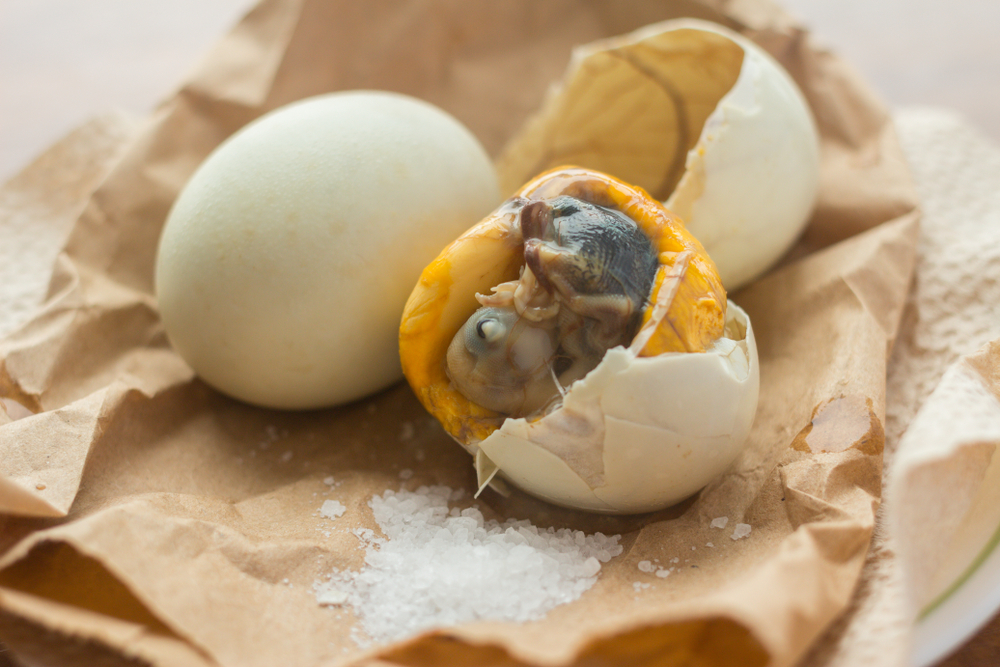
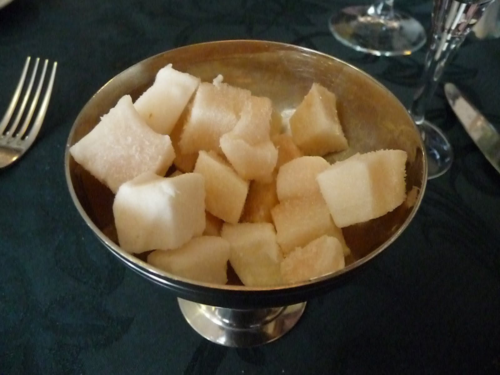
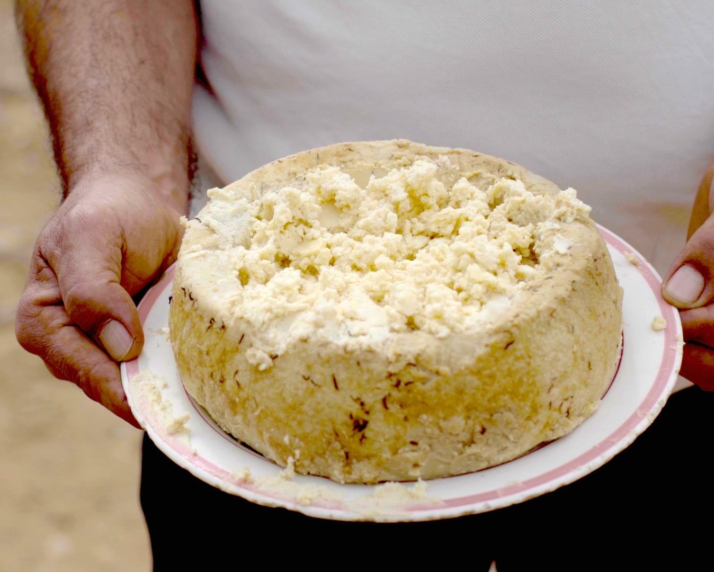
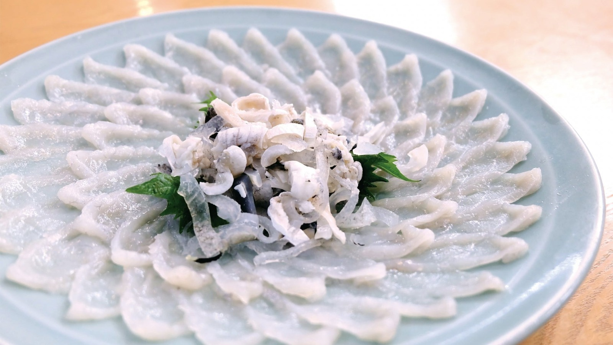

Surströmming (Sweden)
Surströmming is a traditional Swedish fermented herring dish, known for its strong, pungent odor. Typically canned, it is often eaten with flatbreads, potatoes, and onions, and is considered a delicacy despite its intense smell.
History of Surströmming
Fermented fish has been known in Scandinavia since ancient times. The Vikings used partial fermentation to preserve fish for winter. However, surströmming in its modern form appeared in the 16th century. According to legend, Swedish sailors who ran low on salt had to use it sparingly to preserve their fish. As a result, the herring started fermenting, but it remained edible. When the sailors returned to shore, they shared the fish with locals, who found its taste intriguing. Thus, the tradition of producing surströmming was born. Industrial production began in the 19th century, and today, the product is strictly regulated by law. Cans of surströmming are only sold starting from the third Thursday of August, a date celebrated in Sweden with special parties and festivals dedicated to tasting this unusual delicacy.
The Fermentation Process
- Young herring is caught in the Baltic Sea.
- Fish is salted and left to ferment for months.
- Lactic acid fermentation gives it a strong aroma.
- Stored in cans where fermentation continues.
Taste and Smell
Surströmming is famous for its intense smell, which many describe as a mix of rotten fish, ammonia, and hydrogen sulfide. Because of this, Swedes have a tradition of opening the can only outdoors or underwater to prevent the strong odor from spreading indoors. The taste of surströmming is very salty, with a pronounced sourness and fermented notes. For those unaccustomed to it, the flavor can be extreme, but enthusiasts appreciate its complex balance of flavors.
How to Eat Surströmming
Surströmming is rarely eaten on its own. It is traditionally paired with side dishes that soften its strong flavor:
- Tunnbröd (thin, crispy or soft Swedish bread)
- Boiled potatoes (often the "Mandel" variety)
- Raw onion (red or green)
- Sour cream or butter
- Beer or aquavit (a Scandinavian strong spirit)
Interesting Facts
- Japan Airlines banned surströmming due to its fermentation gases.
- Some Swedish apartments prohibit opening cans indoors.
- PewDiePie filmed a viral video tasting surströmming.
Surströmming - A Challenge for the Brave
This Swedish delicacy is often seen as a challenge for tourists. Many record their tasting experience, capturing their reactions to the smell and taste. However, for true gourmets, surströmming is a part of national culture that is worth trying at least once.
The golden rule: open the can outdoors and get ready for an unforgettable experience!

Balut (Philippines)
Balut is a traditional Filipino delicacy consisting of a fertilized duck egg, typically boiled and eaten with salt, vinegar, and sometimes chili. It's known for its unique texture and flavor, and is considered a street food delicacy in many parts of Southeast Asia.
History of Balut
Balut traces its origins back to China, where similar fertilized eggs were consumed centuries ago. The dish was introduced to the Philippines during early trade interactions with the Chinese. Over time, Filipinos adapted the dish, making it an essential part of their cuisine and street food culture. Today, balut remains a popular snack, especially sold by street vendors in the evening, often accompanied by the call "Baluuuuut!" as they walk through neighborhoods. It is commonly enjoyed with salt, vinegar, or chili.
How Balut is Made
- Fresh duck eggs are incubated for 14 to 21 days.
- After incubation, the eggs are boiled and sold hot.
- Some balut varieties have a more developed embryo, while others are softer.
Taste and Texture
Balut has a unique combination of textures and flavors. The broth inside the egg is savory and rich, while the yolk is creamy and slightly grainy. The embryo itself varies in texture, depending on its development stage, with a mix of tenderness and slight chewiness. Despite its appearance, many people describe balut as delicious, with a deep umami flavor, often comparing it to a richer version of a regular boiled egg.
How to Eat Balut
- Crack the top of the shell and sip the broth inside.
- Peel the rest of the shell and sprinkle salt, vinegar, or chili.
- Eat the yolk and embryo, enjoying the textures and flavors.
Cultural Significance
- Balut is believed to be an aphrodisiac and energy booster.
- Often consumed with beer as a street food snack.
- Popular in food challenges worldwide.
Interesting Facts
- Vietnam has a similar dish called "hột vịt lộn".
- 16-day balut is softer, while 21-day balut has a more developed embryo.
- Eating balut is often seen as a test of bravery.
Balut – A Taste of Filipino Tradition
While it may seem intimidating at first, balut is a dish full of tradition and flavor. Whether you’re an adventurous eater or just curious, trying balut is an experience worth having. Trying balut is an experience worth having. Just crack, sip, and enjoy!

Hákarl (Iceland)
Hákarl is an Icelandic dish made from fermented Greenland shark. Known for its strong, ammonia-like odor, it is traditionally hung to dry and aged for several months. Despite its intense taste and smell, it is considered a delicacy in Iceland.
History of Hákarl
Hákarl is a traditional Icelandic delicacy made from Greenland shark that has been fermented and dried. It dates back to Viking times when preservation methods were essential for survival in Iceland’s harsh climate. Historically, the shark meat was buried underground for weeks to allow fermentation, then hung to dry for several months.
How Hákarl is Made
- Fresh Greenland shark meat is buried in gravel or sand for 6-12 weeks.
- The fermentation process removes toxins naturally present in the shark.
- After fermentation, the meat is hung to dry for several months.
- Once dried, it is cut into small cubes and served.
Taste and Texture
Hákarl is known for its strong ammonia-rich aroma and chewy texture. The flavor is sharp, with a lingering aftertaste that is often described as an acquired taste.
How to Eat Hákarl
- Hákarl is typically cut into bite-sized cubes.
- It is eaten using a toothpick.
- It is often paired with Brennivín, a traditional Icelandic schnapps, to balance the strong taste.
Cultural Significance
- Hákarl is an important part of Iceland’s culinary heritage.
- It is commonly served during Þorrablót, a midwinter Icelandic festival.
- Many visitors try hákarl as a challenge, making it one of Iceland’s most famous foods.
Interesting Facts
- Greenland shark meat is toxic when fresh due to high levels of urea and trimethylamine oxide.
- The fermentation process makes the meat safe to eat.
- Hákarl is often ranked among the world's most unusual and challenging foods.
Hákarl – A True Icelandic Experience
Trying hákarl is a rite of passage for adventurous eaters. Will you take the challenge?

Casu Marzu (Italy)
Casu Marzu is a traditional Sardinian cheese known for containing live insect larvae. The cheese is intentionally fermented by the larvae, which break down the fats, giving it a soft, spreadable texture. It is considered a delicacy, though it is banned in some countries due to health concerns.
History of Casu Marzu
Casu Marzu, meaning "rotten cheese" in Sardinian, is one of the most controversial and unique cheeses in the world. Originating from the Italian island of Sardinia, this cheese has been made for centuries using traditional methods. It is considered a rare delicacy and an important part of Sardinian culture, passed down through generations.
How Casu Marzu is Made
- The cheese starts as Pecorino Sardo, a sheep's milk cheese.
- It is left outside in a controlled environment to attract Piophila casei, also known as cheese flies.
- The flies lay eggs inside the cheese, which hatch into larvae.
- The larvae consume and break down the fats in the cheese, resulting in a soft, creamy texture.
- The fermentation process gives the cheese its intense aroma and strong flavor.
- Once matured, the cheese is typically eaten while the larvae are still alive.
Taste and Texture
Casu Marzu has a strong, pungent, and slightly spicy flavor, with a soft, almost liquid consistency. Some describe it as rich and intense, with a lingering aftertaste. The live larvae add a unique experience, as they move inside the cheese while being eaten.
How to Eat Casu Marzu
- Traditionally served on Sardinian bread, such as pane carasau.
- Some people choose to remove the larvae before eating, while others consume them as part of the experience.
- Often paired with a strong red wine like Cannonau to balance the intense flavors.
- It is best eaten fresh, as refrigeration can kill the larvae and change the cheese’s texture.
Cultural Significance
- Casu Marzu is deeply rooted in Sardinian heritage and is considered a symbol of local identity.
- It is traditionally enjoyed during weddings, festivals, and other special occasions.
- Despite being banned under EU food safety laws due to health concerns, it is still produced and consumed illegally within Sardinia.
- Many Sardinians believe the cheese has aphrodisiac properties and health benefits.
Interesting Facts
- The name "Casu Marzu" translates to "rotten cheese," though its production process is controlled.
- The larvae can jump up to 15 cm when disturbed, so some diners wear protective glasses.
- It is considered one of the world’s most extreme and rarest cheeses.
- Only a few Sardinian families continue the traditional method of making Casu Marzu.
- The cheese has a high level of ammonia, contributing to its strong smell.
Casu Marzu – A Bold Sardinian Experience
Trying Casu Marzu is not for the faint-hearted, but it offers a glimpse into Sardinia’s deep-rooted traditions. Would you dare to taste it?

Fugu (Japan)
Fugu is a Japanese delicacy made from pufferfish, known for its potentially deadly toxicity if not prepared correctly. It is carefully prepared by licensed chefs who remove the poisonous parts, and is typically served as sashimi or in a hot pot.
History of Fugu
Fugu, or pufferfish, has been eaten in Japan for centuries despite its highly toxic nature. The first recorded consumption dates back to the Heian period (794–1185), and strict regulations were later introduced during the Edo period to control its preparation. Today, only highly trained and licensed chefs are allowed to prepare fugu safely.
How Fugu is Prepared
- Only specially trained chefs with a government license can legally prepare fugu.
- The toxic parts, including the liver, ovaries, and skin, must be carefully removed.
- The remaining flesh is then sliced thinly for sashimi or used in various cooked dishes.
- Fugu is often served raw, grilled, in hot pots, or deep-fried.
Taste and Texture
Fugu has a mild, slightly sweet flavor with a chewy, firm texture. When served as sashimi, it is cut into paper-thin slices and arranged in an elegant circular pattern.
How to Eat Fugu
- Fugu sashimi (fugu-sashi) is often dipped in ponzu sauce for extra flavor.
- Fugu hot pot (fugu-chiri) is cooked with vegetables and served with dipping sauces.
- Fugu karaage (deep-fried fugu) is a popular crispy alternative.
- Some diners enjoy fugu fins served in hot sake, known as hirezake.
Cultural Significance
- Fugu is considered a luxury dish in Japan and is often enjoyed on special occasions.
- Despite the risks, fugu is widely consumed, especially in cities like Osaka and Tokyo.
- Chefs must undergo years of training and pass difficult exams to receive a fugu preparation license.
- The preparation and sale of fugu are highly regulated by Japanese law.
Interesting Facts
- Fugu contains tetrodotoxin, a poison that is 1,200 times deadlier than cyanide.
- The Emperor of Japan is strictly forbidden from eating fugu due to its risks.
- Despite its dangers, fugu poisoning cases are rare due to strict preparation standards.
- Wild fugu is considered more dangerous than farmed fugu, as farmed fish contain less toxin.
Fugu – A Thrill-Seeker’s Delicacy
Fugu is both a symbol of danger and refinement in Japanese cuisine. Would you dare to try it?